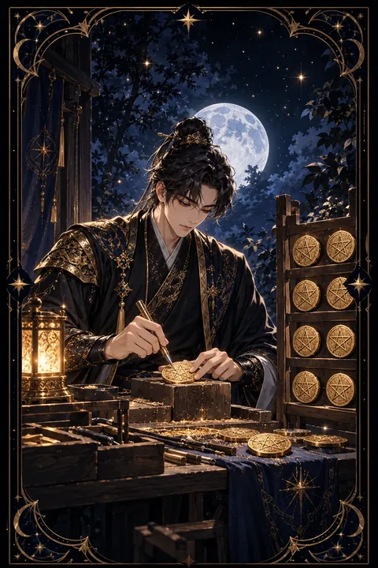

펜타클 8 카드 — 반복으로 여무는 솜씨
펜타클 8 카드 한눈에 보기
펜타클 8 카드 상징 읽기

동네보살의 카드 그림은 전통 라이더–웨이트 덱의 뜻을 새 그림으로 옮긴 것입니다. 아래 상징 설명은 전통 덱의 그림을 기준으로 합니다.
펜타클 8에는 작업대에 앉은 장인이 망치와 끌로 동전에 오각별 무늬를 새기는 모습이 그려져 있습니다. 한 번에 하나씩 정성을 들이는 태도가 이 카드의 중심입니다.
장인 옆 기둥에는 완성된 동전 여섯 개가 차례로 걸려 있고 바닥에도 하나가 놓여 있습니다. 지금까지 쌓아 온 결과물이자 앞으로 채워 갈 자리를 함께 보여 주는 장치입니다.
멀리 보이는 마을은 세상의 시선과 바깥의 소란을 뜻합니다. 장인이 그쪽을 돌아보지 않고 손끝에 집중하는 모습은 남의 평가보다 자기 기술에 몰입하는 자세를 나타냅니다.
장인이 두른 앞치마와 소박한 옷차림은 이 카드가 화려한 성공이 아닌 배우고 익히는 과정의 카드라는 점을 알려 줍니다. 같은 모양을 되풀이해 새기는 손은 반복이 곧 숙련이라는 오래된 진리를 담고 있습니다.
펜타클 8 카드 정방향 뜻
정방향 펜타클 8은 기술과 실력을 차근차근 쌓아 가는 시기를 뜻합니다. 눈에 띄는 성과보다 매일 반복하는 연습과 성실한 태도가 결과를 만드는 때입니다.
새로운 일을 배우는 중이라면 기초를 탄탄히 다지는 데 힘을 쏟아 보세요. 이미 익숙한 일을 하고 있다면 같은 작업을 조금 더 정교하게 다듬을 방법을 찾는 것이 좋습니다. 자격증 공부, 직무 교육, 취미로 익히는 손기술처럼 시간을 들인 만큼 돌아오는 일에 특히 좋은 흐름입니다.
이 카드가 나오면 지루함을 견디는 힘이 곧 실력이라는 점을 기억하세요. 하루에 할 일을 작게 나누고 하나씩 완성해 가면 어느새 기둥에 걸린 동전처럼 결과물이 늘어나 있을 것입니다. 꼼꼼하게 마무리한 일은 주변의 신뢰로 이어집니다. 오늘 익힌 작은 요령 하나가 내일의 속도를 바꿉니다.
펜타클 8 카드 역방향 뜻
역방향 펜타클 8은 노력의 방향이나 방식에 어긋남이 생긴 상태를 보여 줍니다. 빨리 끝내려고 대충 처리하다 품질이 떨어지거나 반대로 완벽을 고집하다 일을 마무리하지 못하는 모습일 수 있습니다.
같은 일을 오래 반복하면서 의욕이 떨어지고 지루함이 커진 경우에도 이 카드가 나옵니다. 열심히는 하는데 실력이 늘지 않는다고 느낀다면 연습 방법 자체를 바꿔 볼 때입니다.
하지만 이 카드는 재능이 부족하다는 뜻이 아닙니다. 지금 익히는 기술이 정말 원하는 방향인지 먼저 확인해 보세요. 방향이 맞다면 하루 작업량을 줄이는 대신 집중하는 시간을 확보해 보세요. 방향이 다르다면 과감히 배울 거리를 바꾸는 편이 낫습니다. 작은 결과물 하나를 끝까지 완성하면 손의 감각이 다시 살아납니다.
연애에서 펜타클 8 카드
솔로라면 천천히 알아 가는 인연이 잘 맞는 시기입니다. 취미 모임이나 배움의 자리에서 성실한 모습을 보여 주는 사람에게 끌리기 쉽습니다. 당신의 꾸준함도 상대에게 좋은 인상을 줍니다.
연애 중이라면 관계를 공들여 가꾸는 때입니다. 큰 이벤트보다 매일의 작은 배려와 약속을 지키는 태도가 신뢰를 쌓습니다. 다만 일이나 공부에 몰두하느라 상대를 소홀히 하지 않도록 주의가 필요합니다. 바쁜 날에도 짧은 연락 하나를 잊지 않는 것이 이 카드가 권하는 사랑의 기술입니다. 두 사람이 함께 요리를 배우거나 무언가를 만드는 시간을 가져 보는 것도 좋습니다. 서로의 노력을 알아봐 주는 말 한마디가 관계의 무늬를 더 선명하게 새겨 줍니다. 상대가 공들여 준비한 것이 있다면 그 과정을 먼저 알아봐 주세요.
재회·속마음 질문에서 펜타클 8 카드
재회 질문에서 펜타클 8이 나오면 급하게 결과를 기대하기보다 시간을 두고 신뢰를 다시 쌓아야 한다는 뜻입니다. 헤어진 이유가 성의 부족이나 무심함이었다면 그 부분이 실제로 바뀌었다는 것을 행동으로 증명하는 일이 우선입니다. 상대는 말보다 꾸준히 달라진 모습을 볼 때 마음을 엽니다. 단 한 통의 메시지로 지난 일을 모두 되돌리겠다는 욕심은 내려놓고 작은 안부부터 차근차근 이어 가 보세요. 그 사이 스스로의 일과 생활을 단단히 가꾸는 것도 재회의 가능성을 높이는 방법입니다. 장인이 동전을 하나씩 완성하듯 관계도 한 번에 한 걸음씩 다시 새겨 간다는 마음이 필요합니다. 성급하게 확답을 요구하지 않는 태도가 오히려 상대를 편안하게 만듭니다.
일·금전에서 펜타클 8 카드
일과 직장에서는 실력을 갈고닦기 좋은 시기입니다. 신입이나 이직 초기라면 업무를 빠르게 익히는 흐름입니다. 경력이 있다면 전문성을 한 단계 끌어올릴 기회가 옵니다. 교육 과정이나 자격증 준비를 시작하기에도 알맞습니다.
금전 면에서는 손재주와 기술이 수입으로 이어지는 흐름입니다. 들인 시간만큼 보수가 따라오니 자신의 작업에 합당한 값을 매기는 연습도 필요합니다. 수입이 들어오면 일정 금액을 저축 통장에 먼저 떼어 두고 생활비를 짜는 습관이 도움이 됩니다. 기술을 익히는 데 드는 교재비나 수강료는 아까운 지출이 아니라 솜씨를 키우는 거름으로 보고 미리 계획을 세워 두는 것이 좋습니다.
펜타클 8 카드는 예일까 아니오일까
꾸준히 노력하면 결과가 따라온다는 카드여서 예로 봅니다. 다만 단번에 이루어지기보다 시간을 들여 쌓아야 하는 일이라는 점을 함께 알려 줍니다. 역방향이라면 노력하는 방식부터 점검해야 하므로 조건부로 읽습니다.
자주 묻는 질문
펜타클 8 카드 역방향은 나쁜 뜻인가요?
역방향 펜타클 8은 노력의 방향이나 방식에 어긋남이 생긴 상태를 보여 줍니다. 빨리 끝내려고 대충 처리하다 품질이 떨어지거나 반대로 완벽을 고집하다 일을 마무리하지 못하는 모습일 수 있습니다.
펜타클 8 카드가 연애 질문에 나오면요?
솔로라면 천천히 알아 가는 인연이 잘 맞는 시기입니다. 취미 모임이나 배움의 자리에서 성실한 모습을 보여 주는 사람에게 끌리기 쉽습니다. 당신의 꾸준함도 상대에게 좋은 인상을 줍니다.
타로 카드는 어떻게 뽑나요?
타로 카드 페이지에서 78장을 섞으면 그중 22장이 펼쳐집니다. 마음이 가는 세 장을 고르면 과거·현재·미래 자리에 놓이고, 한 장씩 뒤집어 자리와 방향에 맞는 풀이를 읽습니다. 정방향과 역방향은 섞는 순간 정해집니다.